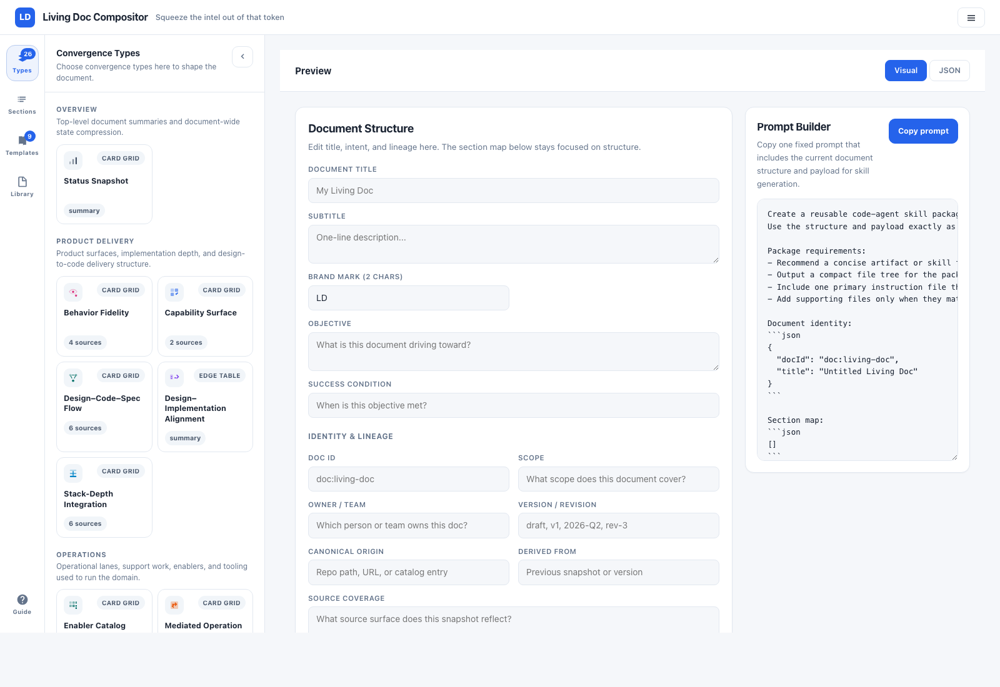

Stop met betalen voor de verborgen kosten van versnipperd werk.
Ontwerpen staan in Figma. Code in de repo. Beslissingen in Slack. Elke taak begint op dezelfde manier: reconstrueren wat er speelt.
Mensen doen het. Agents doen het. Je betaalt ervoor in tijd, fouten en tokens.
Een living doc maakt van die verspreide realiteit één gestructureerd overzicht. Compleet, actueel, direct bruikbaar. Voor mens en AI.

Een living doc in de praktijk. Verankerd aan de bron, elke claim herleidbaar.
Je betaalt al voor versnippering. Je ziet de rekening alleen niet.
Elke feature leeft in meerdere systemen. Elke keer dat iemand eraan werkt, wordt het beeld opnieuw opgebouwd. Die kosten stapelen op.
Voor je team
Reconstructie in plaats van uitvoering- Werk begint met reconstructie, niet met uitvoering
- Context switching vertraagt elke taak, niet alleen de complexe
- Onboarding leunt op stamkennis
- Reviews missen diepgang doordat het volledige beeld niet zichtbaar is
Voor je AI-stack
Opnieuw ontdekken in plaats van redeneren- Tokens verbrand aan opnieuw ontdekken in plaats van redeneren
- Geen continuïteit. Elke sessie begint vanaf nul
- Output beperkt tot gedeeltelijke context windows
- Generieke antwoorden als de domeinstructuur ontbreekt
Stop met documenten schrijven. Begin realiteit te projecteren.
Traditionele documenten falen om één reden: ze vragen onderhoud. En onderhoud verliest altijd.
Een living doc draait het model om. Je schrijft geen samenvattingen. Je definieert een gestructureerd overzicht over wat er al is.
Het document wordt een dunne semantische laag:
Drie primitieven. Geen systeemoverhead.
Entity
De bron van waarheid. Code, ontwerp, ticket.
Edge
De betekenis. Implementeert, specificeert, test.
Scope
Het overzicht dat het bruikbaar maakt.
Meer niet.
Als je het document niet kunt vertrouwen, is het waardeloos.
Living docs doen niet alsof ze de waarheid zijn. Ze tonen hem.
Expliciete dekking
Wat erin zit en wat niet, staat zichtbaar op de pagina zelf.
Canonieke herkomst
Elk element linkt terug naar zijn bron. Geen losse feiten.
Exacte tijdstempels
Volledige precisie, niet vaag. Je weet precies wanneer de snapshot is genomen.
Eerlijke staat
Het document toont een moment in de tijd, geen nep-"live"-status.
Geen adoptiebarrière.

Open het bestand. Het document en het gereedschap zijn hetzelfde.
Eindelijk: iets waar agents daadwerkelijk mee kunnen werken.
Agents falen niet omdat ze dom zijn. Ze falen omdat ze structuur missen.
Een living doc geeft ze wat ze nodig hebben:
Zodat ze kunnen redeneren in plaats van opnieuw ontdekken.
Wordt geleverd met een Claude Code skill pack. Elke skill is een korte prompt die een agent leert om de living doc te lezen, bij te werken of uit te breiden.
Bootstrap
Koppelt een sessie aan het relevante document. Laat zien wat verouderd is. Werkt secties bij tijdens het werk.
Meedenkpartner
Helpt ontdekken welk overzicht past bij een nieuw domein. Schrijft registry entries voor je.
Ik heb dit niet gebouwd om werk te documenteren.
Ik heb het gebouwd omdat werken met Claude Code, OpenAI Codex en een team een constante belasting blootlegde: elke sessie begon met het opnieuw opbouwen van context.
Niet het probleem oplossen. Het opnieuw reconstrueren.
AI neemt geen complexiteit weg. Het versterkt die. Meer parallel werk, meer impliciete beslissingen, meer verspreide state.
Dit bestaat om die laag te beschermen, zodat mensen en agents kunnen werken aan het probleem zelf, en niet aan het opnieuw ontdekken ervan.
Voor wie dit niet is.
Dit is geen wondermiddel. Het is geen AGI. Het is niet de mythische "rode knop" die je systeem voor je draait.
Als je op zoek bent naar een manier om je denken uit te zetten, verantwoordelijkheid over te dragen, of outputs te vertrouwen zonder verificatie, dan is dit niets voor jou.
Dit vraagt om waakzaamheid, oordeelsvermogen en blijvende betrokkenheid.
Als dit bekend aanvoelt, ben jij de doelgroep.
Je hebt iets waardevols gebouwd. Nu moet het betrouwbaar, uitlegbaar en schaalbaar worden.
Ik loop er graag met je doorheen. Geen pitch, alleen jouw systeem en waar dit inpast.
Scan met de WhatsApp-camera